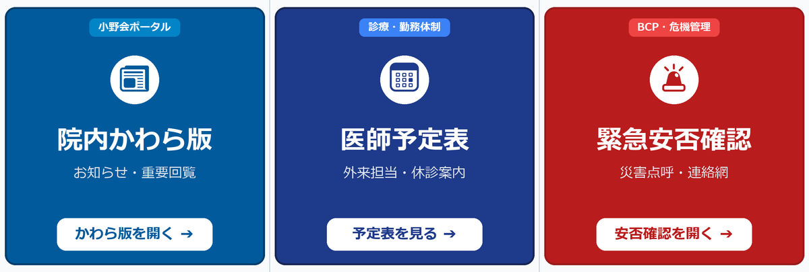

🌟 LINE連携するとこんなに便利＆安心になります！
院内かわら版では、職員の皆様が自宅や外出先のスマートフォンから安全にアクセスできるようにするため、公式LINEを活用した簡単認証を採用しています。
自宅のスマホからいつでも閲覧
院外からかわら版の連絡事項やシフト・予定表をいつでもチェックできます。
災害時のBCP安否点呼
地震等の災害時に病院からの生存確認通知が届き、1秒で安否報告ができます。
1回認証すれば30日間パス
毎回暗証番号を入れる必要がなく、日常利用中は自動で期限が延長されます。
🚀 初期登録はたったの3ステップ（所要時間: 1分）
Step 1
公式LINE「おの肛門科」を友だち追加する
スマートフォンのカメラまたはLINEアプリで以下のQRコードを読み取り、医療法人小野会「おの肛門科」公式アカウントを友だち追加してください。
スマホでスキャン
Step 2
かわら版で4桁コードを発行し、LINEに送信する
かわら版の「LINE連携設定画面（line_link.php）」を開きます。画面に大きく【数字4桁】が表示されます。
おの肛門科 公式アカウントです。
かわら版画面に表示された【数字4桁】をそのままメッセージで送信してください。
かわら版画面に表示された【数字4桁】をそのままメッセージで送信してください。
6597
▲ 先ほど友だち追加した公式LINEのトーク画面を開き、数字4桁をそのまま送信します。
Step 3
画面が自動で切り替わり、連携完了！
LINEでコードを送信すると、画面が自動的に検知して「🎉 公式LINEとの連携が完了しました！」と表示されます。これですべての設定が完了です！
✓ これ以降、友だち追加やQRコード読み取りをやり直す必要はありません（永久有効）
日常の使い方
LINEトーク下の「固定メニュー」から1タップ起動！
LINE連携が完了すると、「おの肛門科」のトーク画面下部に小野会イントラ専用の3つのメニューボタンが常時表示されます。
URLの手打ちやブックマーク登録は一切不要です。使いたい機能をタップするだけで、スマホの標準ブラウザ（SafariやChrome）が自動起動し、30日間ログインしたまま快適に利用できます。

▲ LINEトーク画面の下部にこの3つのボタンが常設されます
📜
① 院内かわら版を開く（左ボタン）
院内のお知らせ、回覧板、重要通知をいつでも閲覧できます。未読マークの確認や、記事へのコメント返信もスマホからスムーズに行えます。
🩺
② 医師予定表・休診情報（中央ボタン）
本日の外来担当医・休診医師が一目でわかります。
週間・月間のカレンダー切り替え、医師申し送りメモ（土曜診療日程や全体会連絡）、小野院長や矢野副院長など特定の先生の予定絞り込みにも完全対応しています。
週間・月間のカレンダー切り替え、医師申し送りメモ（土曜診療日程や全体会連絡）、小野院長や矢野副院長など特定の先生の予定絞り込みにも完全対応しています。
🚨
③ 緊急安否確認・BCP連絡網（右ボタン）
地震や台風などの災害発生時、または安否点呼訓練時に、1タップで自身の無事や出勤可否を報告できます。緊急連絡網や避難マニュアルもここから確認可能です。
💡 もし30日間使わず期限が切れていたら？
画面に「LINEに認証コードを送信」ボタンが表示されます。タップして届いた6桁の数字を入力するだけで、QRコード読み取りなどの面倒な初期設定なしで、即座に次の30日間パスが自動更新されます！
画面に「LINEに認証コードを送信」ボタンが表示されます。タップして届いた6桁の数字を入力するだけで、QRコード読み取りなどの面倒な初期設定なしで、即座に次の30日間パスが自動更新されます！
🔒 個人情報・プライバシーに関する安心Q&A
Q. 私個人のLINEアカウント名やタイムライン、家族とのトークは病院に見られますか？
絶対に一切見られません。
システムが管理しているのは、LINE社が自動発行する暗号化された機械用ID（英数字の羅列）のみです。病院側にはあなたの個人の名前、アイコン画像、お友だちリスト、他のトーク履歴などは一切開示されませんのでご安心ください。
システムが管理しているのは、LINE社が自動発行する暗号化された機械用ID（英数字の羅列）のみです。病院側にはあなたの個人の名前、アイコン画像、お友だちリスト、他のトーク履歴などは一切開示されませんのでご安心ください。
Q. 広告や関係のない宣伝メッセージが届くことはありますか？
広告メッセージは一切配信されません。
届くメッセージは「災害発生時の緊急安否確認・生存点呼」および「あなたがログイン時・既読時に自身で要求した確認コード・既読メモ」のみです。
届くメッセージは「災害発生時の緊急安否確認・生存点呼」および「あなたがログイン時・既読時に自身で要求した確認コード・既読メモ」のみです。
Q. スマホを機種変更した場合はどうなりますか？
新しいスマホでかわら版のログイン画面を開き、「山本 太」等のお名前を選択して「LINEにコード送信」を押すだけです。LINEに届く6桁コードを入れれば、即座に新しいスマホが許可端末として登録されます。初期設定（QR読み取り等）をやり直す必要はありません。
Q. スマートフォンを落としたり紛失した場合はどうすればいいですか？
速やかに事務長またはシステム管理者へご連絡ください。
管理画面からボタン1つで紛失端末のアクセス権を即座に遠隔遮断（失効）できます。拾得者にかわら版（患者情報や連絡事項）を見られる心配はありません。端末が見つかった後や代替機入手後は、再度LINEでコード認証するだけで安全に再開できます。
管理画面からボタン1つで紛失端末のアクセス権を即座に遠隔遮断（失効）できます。拾得者にかわら版（患者情報や連絡事項）を見られる心配はありません。端末が見つかった後や代替機入手後は、再度LINEでコード認証するだけで安全に再開できます。